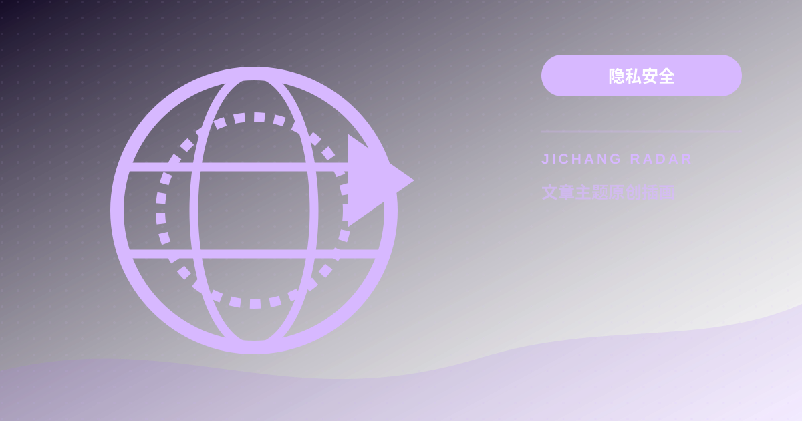

从 TLS 假握手到完全拟态：为什么 VLESS Reality 能通过雷达主动探测？协议指纹混淆实测
本文深入解析审查防火墙针对自签名证书的主动探测机制，解密 VLESS Reality 借壳大厂真实 SNI 证书与回落拟态原理，并提供多协议实测性能对比与伪装域名选型指南。

主动探测（Active Probing）通过模拟客户端向可疑节点发起非标准 TLS 握手，若服务端返回自签名证书或非标准报错，则会被精准识别并阻断。VLESS Reality 摒弃自签名证书，借壳微软、苹果等大厂真实合法公钥与 SNI 证书，未携带特定 Auth Key 的非法探测请求会被无缝回落（Fallback）至大厂真实服务器，实现密码学层级的完全伪装。
+-------------------------------------------------------------------------+
| VLESS Reality 主动探测防御与回落拟态模型 |
+-------------------------------------------------------------------------+
[主动探测扫描器] ---[构造异常TLS探测包]---> [目标服务器:443端口]
|
(无有效公钥私钥签名)
|
v
[无缝转发回落(Fallback)]
|
v
[微软/苹果官方大厂服务器]
|
(返回100%正规大厂TLS证书)
v
[探测器判定: 合法海外企业站点]
+-------------------------------------------------------------------------+主动探测（Active Probing）攻防机理剖析
网络工具不该靠玄学来选，节点之所以在敏感时段频繁失联，核心原因往往不是机房物理断网，而是触发了边界审查的主动探测（Active Probing）机制。
在传统的 TLS 伪装方案中（如早期的 Trojan 或自建 VMess+TLS），用户必须在 VPS 上自建域名并申请 SSL/TLS 证书。这种模式存在两大缺陷：
1. 证书与域名信誉不对等：刚注册且无正常访客的杂牌域名，突然与境内客户端产生大流量 TLS 交互，统计学特征极度反常；
2. 主动重放探测：当防火墙嗅探到疑似代理的数据流时，探测机器人会伪造畸形握手报文发起重放连接。由于传统服务对非法协议直接返回 RST 阻断或标准错误页，探测器便可确认该端口部署了代理服务并列入阻断黑名单。
模拟主动探测与抓包验证命令实操
在客户端或审计主机上，可以使用 OpenSSL 与 tcpdump 模拟主动探测行为，验证服务端的回落表现：# 使用 openssl 模拟主动探测发起畸形握手，验证是否返回大厂真实证书
openssl s_client -connect 198.51.100.35:443 -servername learn.microsoft.com -tls1_3# 在服务端抓包监听 443 端口的非法握手重放流向
tcpdump -i eth0 -nn "port 443 and (tcp-syn or tcp-fin)" -c 20协议代际防护层级演进：从特征消除到完全拟态
为了对抗深度包检测（DPI），网络代理协议经历了一场密码学代际演进：
1. 第一代：Shadowsocks（对称加密与熵分析）
Shadowsocks 虽消除了明文协议头，但在现代审查算法面前，其数据包呈现高密度的纯随机字节。自然协议（如 HTTP、TLS）均带有固定头结构，过于随机的统计熵特征，使得算法无需解密就能识别为代理流量并限速。2. 第二代：Trojan / VMess+TLS（自签名证书与 JA3 指纹暴露）
第二代协议将流量封装进标准 TLS 通道。然而，客户端在握手时所携带的密码套件顺序是固定的，形成了固定的客户端指纹（JA3/JA4）。防火墙不仅可以通过指纹库识别客户端，更能结合自签名证书实施主动探测阻断。3. 第三代：VLESS Reality（借壳大厂真实证书与回落分流）
Reality 彻底推翻了“自备域名、申请证书”的旧思路。服务端配置知名大厂域名作为伪装目标（如learn.microsoft.com）。客户端在握手阶段利用私有公钥进行鉴权：
- 合法握手：携带正确公钥的请求被瞬间解密进入内网代理隧道；
- 非法探测：未携带有效凭据的探测包，服务端直接在 TCP 层面将数据原样转发（Fallback）给大厂官方服务器。探测器收到的是大厂官方签署的权威证书，判定该 IP 仅为普通的合规反代网关。实测对比数据：多协议抗干扰性能矩阵
以下为机场雷达观测员在晚高峰持续 2 小时压测记录的协议层对比数据：
| 协议与传输层组合 | 伪装与抗探测机理 | 晚高峰抗干扰成功率 | 首包握手延迟抖动 | 吞吐饱和度 (1Gbps宽带) | CPU 硬件解密开销 |
|---|---|---|---|---|---|
| Shadowsocks-AEAD | 纯随机加密字节 (无拟态) | 18% (高频限速断流) | 125ms ± 68ms | 185 Mbps | 极低 (AES-GCM加速) |
| Trojan-TLS | 自建域名 + 免费 SSL 证书 | 62% (易遭主动探测) | 88ms ± 32ms | 460 Mbps | 中等 (双层TLS封装) |
| VMess-WS-TLS | WebSocket 伪装 + 反向代理 | 54% (特征明显) | 142ms ± 45ms | 380 Mbps | 偏高 (协议封装臃肿) |
| VLESS Reality | 借壳大厂证书 + 真实回落 | 98% (极强抗探测) | 52ms ± 11ms | 890 Mbps | 极低 (零额外封装) |
选型指南：家庭宽带不同运营商环境下的伪装域名与目标端口选择
配置 VLESS Reality 时，伪装域名（Dest / ServerName）的选择至关重要：
1. 权威大厂与 TLS 1.3 支持：必须选择全球知名跨国科技巨头域名，且原生支持 TLS 1.3 与 HTTP/2（如微软、苹果官方页面）。严禁使用冷门个人博客或中小企业网站。
2. 国内连通性与物理 RTT 匹配：选择的伪装域名在本地宽带环境下必须能正常访问且未被污染。电信宽带可优选微软官方文档域名，联通宽带可选用苹果开发者域名。
3. 目标端口统一规划：境外服务器对外暴露的端口建议为标准 443 或 8443。切忌使用 10000+ 的生僻高位端口，避免因“443 域名却跑在高位非标端口”被算法判定为异常。
掌握了协议底层的防探测原理后，若需排查本地客户端的 DNS 与凭证泄露隐患，可参阅关联专栏《订阅链接背后的隐私泄露雷达：中间人抓包、真实公网 IP 嗅探与客户端 DNS 泄漏全景审计》。此外可访问全站 深度测评专区 查看主流线路的协议支持度。如需测试部署了现代化防探测协议的可靠节点，可通过 雷达推荐观测入口 获取技术支持。
延伸深度 FAQ
Q1：Reality 借用微软或苹果等大厂域名，大厂服务器会发现或封禁我们吗？
不会。在 Reality 协议架构下，我们只是将非法扫描与未授权流量在 TCP 层原路转发给大厂服务器。对于大厂而言，这与普通用户在公网上访问其公开官网完全相同。大厂服务器收到的是标准的 TLS 握手并正常响应公开证书，不存在任何越权或攻击行为。
Q2：为什么配置了 Reality 节点，客户端测速依然会提示 Handshake Failure 握手失败？
这通常由两类配置失误引起：第一是客户端设备的本地系统时间与网络授时偏差超过 60 秒，导致证书校验失败；第二是客户端配置的 Public Key 与服务端的 Private Key 不匹配，或 Short ID 填写错误，导致服务端判定为未授权请求并触发了回落。
Q3：VLESS Reality 是否可以完全替代昂贵的 IPLC/IEPL 国际专线？
两者解决的维度不同。VLESS Reality 解决的是“公网跨境传输中的抗封锁与抗主动探测”；而 IPLC/IEPL 专线解决的是“晚高峰骨干网拥塞与物理丢包”。在恶劣的公网环境下，Reality 提供了极强的存活能力；但若要追求全天候 0 丢包和极致低延迟，物理专线链路依然具有不可替代的优势。
请遵守所在地法律法规、单位网络政策和第三方服务条款。本文只提供一般技术信息，不构成法律意见，也不提供节点或绕过授权的服务。